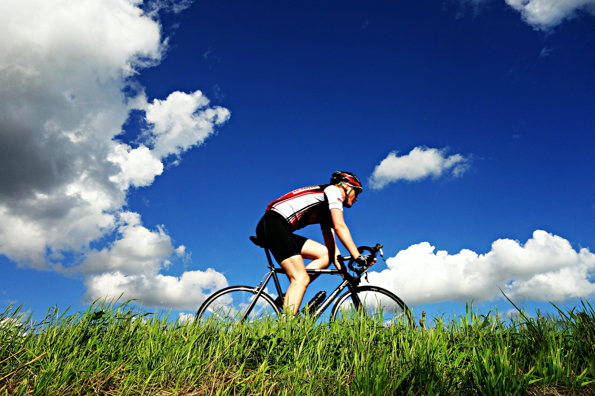

Sur les routes de nos campagnes
Les Hauts-de-France font la part belle aux personnes qui se baladent à vélo, avec quelques belles structures et notamment la mise en place des repérages "points-noeuds" dans le département du Nord.
Le VTT n'est pas en reste dans la région avec notamment de nombreux sites VTT FFC aux parcours balisés pour tous niveaux.Entre monts et marais de Saint-Omer (Pas-de-Calais), les collines de l'Artois (Pas-de-Calais).
Les cyclistes sur route rêveront en particulier de la Tranchée d'Arenberg, secteur pavé mythique de "Paris-Roubaix".

De Calais à Wattrelos
Entre forêts, marais, chemins de halage, villes fortifiées et communes remarquables, retrouvez notre sélection d'itinéraires jalonnés se prêtant idéalement à une balade à vélo en famille aux alentours de Lille.
Des circuits faciles, sécurisés et ponctués de curiosités attendent petits et grands sportifs, pour une sortie plein air loin de l'agitation urbaine...
De quoi prendre un bon bol d'air frais !

Les joies du parcours
Ce site unique en France est un véritable joyau de la nature, où paysages sauvages et cultivés se mêlent harmonieusement. À vélo, les familles ont plusieurs circuits à leur disposition pour parcourir les décors variés du marais audomarois et du Parc Naturel Régional des Caps et Marais d'Opale.

L'aventure au bout du guidon
Le long du canal de Seclin, un sentier ombragé invite à la promenade à vélo, dans une atmosphère paisible et bucolique. Un itinéraire en boucle d'une distance de 10 km permet de traverser les communes de Seclin et de Houplin-Ancoisne, où des bâtisses remarquables sont offertes à la vue des familles.

Premier voyage à vélo en famille
Cette balade au fil de l'eau part de la Citadelle de Lille pour rejoindre Deûlémont. Ports de plaisance, écluses et monuments historiques défilent au gré des communes pleines de charme traversées par le circuit. Une balade agréable et sans difficulté, idéale pour les enfants

Le bike trip d'Antoine
Cette voie verte en sable stabilisé est parfaite pour sillonner les vastes espaces du Parc Naturel Régional Scarpe-Escaut. Elle conduit les familles jusqu'à la frontière belge, le long d'une rivière aux rives ombragées et passe également en pleine forêt, au gré de sentiers aménagés pour le vélo.